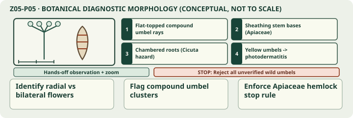

Z05-P05 · Wild foods and poisonous lookalikes · New manuscript
Flower Symmetry, Inflorescence Types and Apiaceae Umbel Stop Rule
Identify major floral structures and enforce a mandatory stop gate on white- or yellow-umbel carrot-family (Apiaceae) plants.
When it applies · Spring through autumn flowering herbaceous and woody plant identification.
Equipment · 10x hand lens, regional key, camera (hands-off unknown umbels).

Actions
- Record floral symmetry (radial vs bilateral), petal/sepal counts, and cluster form (spike, raceme, panicle, composite head, or flat-topped umbel) using a hand lens.[B20]
- Treat every compound umbel (umbrella-like spoke cluster of small white or yellow flowers typical of Apiaceae) as a critical hazard flag because lethal water hemlock (Cicuta), poison hemlock (Conium), and burn-causing wild parsnip (Pastinaca) belong to this family.[B11, B14]
- Enforce a strict no-foraging hold on wild carrot-family roots and stems in field manuals because minuscule accidental bites of hemlock cause rapid seizures and death.[B11, B24]
Failure recognition · Assuming white flat-topped roadside umbels are harmless Queen Anne lace risks fatal water-hemlock or poison-hemlock poisoning.[B11]
Verify · Inflorescence type is verified with zero bare-skin contact on yellow umbels and strict stop gate on wild Apiaceae.[B11, B14, B20]
Stop or change course · Stop immediately and do not touch or sample any unidentified compound-umbel plant in wetlands, ditches, or roadsides.[B11, B14]
Evidence and editorial notes
- B11 · USDA ARS · Poisonous Plant Research Laboratory Reference (Current web edition)
- Section: Water hemlock (Cicuta) and poison hemlock (Conium) lethality · Conditions: Wetlands, ditches, and disturbed ground with Apiaceae (carrot-family) umbels
Support: Water hemlock (Cicuta maculata) and poison hemlock (Conium maculatum) contain potent neurotoxins causing rapid seizures, respiratory arrest, and death even from small bites.
Limitations: Never forage wild carrot-family roots or foliage without independent qualified botanical verification; reject any wet-ground umbel outright. · Conflicting evidence: None noted.
Editorial note: Mandatory Z05 lethal Apiaceae stop rule. · Specialist reviewer: Botanist and medical toxicologist
Primary source · checked 2026-11-25 - B14 · University of Minnesota Extension · Wild Parsnip Identification and Photodermatitis Hazard (Current web edition)
- Section: Wild parsnip (Pastinaca sativa) phytophotodermatitis · Conditions: Sunny roadsides, prairies, and disturbed meadows in Minnesota
Support: Sap from wild parsnip contains furocoumarins that react with sunlight to cause painful chemical burns and blistering.
Limitations: Avoid bare-skin contact with yellow-umbel roadside stems; wash sap immediately and shield exposed skin from sunlight. · Conflicting evidence: None noted.
Editorial note: Specific Minnesota photodermatitis lookalike warning. · Specialist reviewer: UMN Extension botanist
Primary source · checked 2026-11-25 - B20 · USDA Forest Service · Celebrating Wildflowers: Plant Identification and Conservation (Current web edition)
- Section: Botanical morphology terminology and multi-character keys · Conditions: Observing leaf venation, margins, flower symmetry, and fruit anatomy
Support: Accurate plant identification requires confirming multiple independent morphological characters at the observed life stage.
Limitations: Missing flowers, fruit, or underground parts require stopping identification rather than guessing. · Conflicting evidence: None noted.
Editorial note: Enforces multi-feature identification standard. · Specialist reviewer: Plant taxonomist
Primary source · checked 2026-11-25 - B24 · CDC MMWR · Notes from the Field: Severe Mushroom Poisoning — Minnesota 2018 (MMWR 68(21))
- Section: Rejection of folklore edibility tests and AI-only visual clearance · Conditions: All wild plant, berry, root, and fungal screening
Support: Universal skin/lip rub tests, silver-spoon tests, animal-browsing observations, single photos, and generated illustrations never establish edibility.
Limitations: If any diagnostic feature, site-contamination history, or expert review is missing, consumption remains strictly WITHHELD. · Conflicting evidence: None noted.
Editorial note: Enforces Z05 fail-closed edibility rule. · Specialist reviewer: Botanist, mycologist, and clinical toxicologist
Primary source · checked 2026-11-25
Source lineage · New manuscript (Z05 P19-C plant morphology) · Classification · New manuscript.